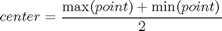
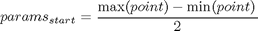
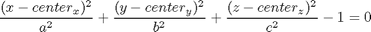

calc_elip
Description: This Function determines the size of this pieces numbers of elipses that will cover each of the vertices describing triangles that describe the shape
Contents
Function Call
Inputs:
piece= the current peice that is being plotted
current_shape = (verts) the vertices of the triangles of the shape being plotted
Returns:
{x,y,z} = Cartesian points describing ellispe
params = the parameters a,b,c of elispoid
center = center of ellipse
function [x,y,z,params,center]=calc_elip(piece,current_shape)
Variables

%center of elipsoid
center=(max(current_shape)+min(current_shape))/2;

%the parameters a,b,c of elispoid
params=(max(current_shape)-min(current_shape))/2;
Ellipse Function:

%we want to grow a, b,c %alternate between growing methods alternate=0; %intial_params=params; while find(((current_shape(:,1)-center(1)).^2)/params(1)^2+... ((current_shape(:,2)-center(2)).^2)/params(2)^2+... ((current_shape(:,3)-center(3)).^2)/params(3)^2>1) %this one increases each param by 1% if alternate==0 params=params*1.01; alternate=1; else %this one works out the average of a,b,c and then adds 1% of this average to each one params=params+sum(params)/3*0.01; alternate=0; end end
Matlab's Ellipse Shell Creation Function
[x,y,z]=ellipsoid(center(1),center(2),center(3),params(1),params(2),params(3),10); %display(strcat('For piece:',num2str(piece),',The center is at',num2str(center),', the a,b,c params are',num2str(params))); %display(strcat('initial params were',num2str(intial_params),'new ones are',num2str(params)));